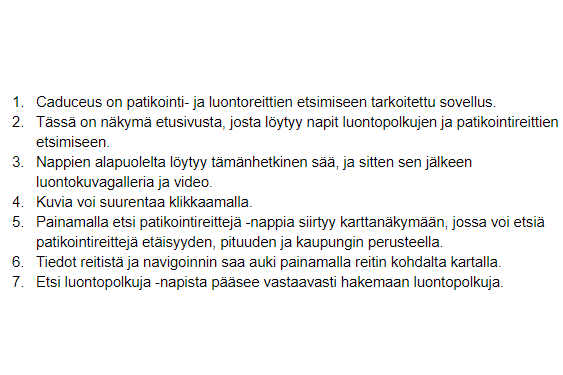
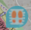
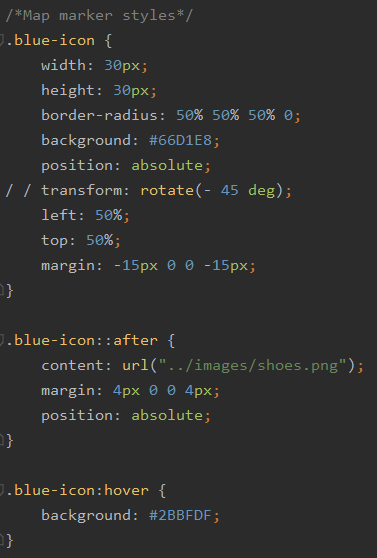
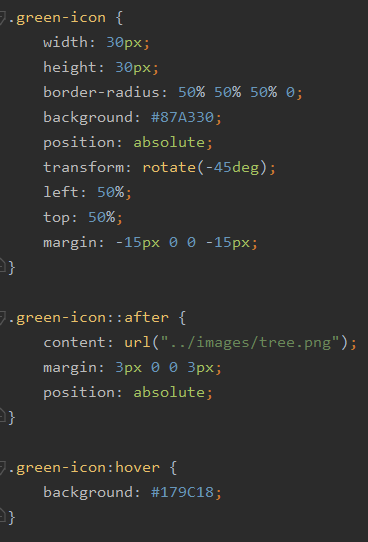
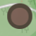
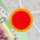
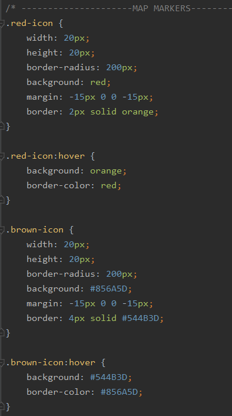

Projekti ZIP-muodossa
Tästä löytyy koko projekti zip-muodossa.
Lataa zip tästäVideon Tavoitteet
Videon tavoite on saada ihmiset menemään ulos, tavoite saavutetaan näyttämällä katsojalle luontoa. Kohderyhmänä on kaikki luonnosta/patikoinnista kiinnostuneet. Video yrittää ratkaista kohderyhmän ongelmia rohkaisemalla heitä menemään ulos.
Shooting Script
Kuvakäsikirjoitus
Puheen Käsikirjoitus
Äänitykset
Käsittelemättömät:
Käsitellyt:
Ikonit
Kartta ikonit on tehty itse css-koodilla. Alla näkyy ikonit sekä niiden koodit. Kartta ikonien koodien alta löytyy Irinan tekemä Logo meidän sivulle sekä Jonnen tekemä suurennuslasi.





